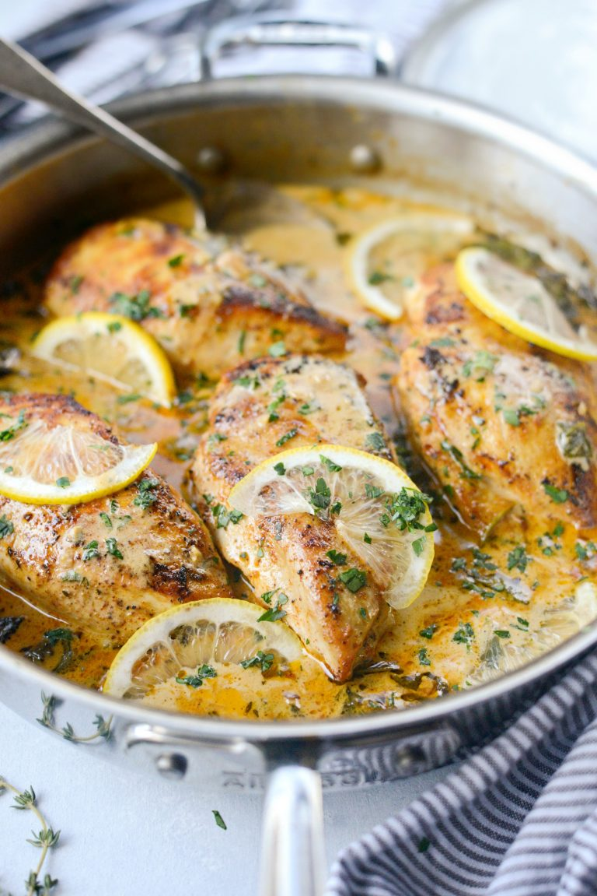

Creamy Lemon Chicken with Spinach

Description
Creamy Lemon Chicken with Spinach is a simple dish that's flavorful and rustic. Chicken breasts are seasoned with lemon pepper and paprika, seared until golden and nestled in a creamy garlicky, lemon and thyme sauce with spinach. This recipe is great with pasta or rice and with a roasted veggie. Serves 4 in about 35 minutes.
Ingredients
- 2 tablespoons butter, divided
- 1 tablespoon light olive oil
- 4 boneless skinless chicken breasts, (about 1-1/2 to 2 pounds total)
- 4 shakes lemon pepper
- 2 shakes paprika
- 1 medium shallot, finely diced
- 3 cloves fresh garlic, minced
- 3/4 teaspoon thyme leaves, minced
- 2 tablespoons dry white wine, like sauvignon blanc
- 1/2 lemon, juiced
- 1/4 cup low-sodium chicken broth**, optional (see notes)
- 3/4 cup heavy cream
- 1/4 cup freshly grated Parmesan cheese
- kosher salt, to taste
- freshly ground black pepper, to taste
- 2 handfuls baby spinach
- parsley, minced, for serving
Steps
- Preheat 1 tablespoon of butter with 1 tablespoon of light olive in a deep-sided 10-inch skillet over medium-high heat.
- Meanwhile, season both sides of the chicken with lemon pepper and paprika.
- Once the pan is hot, sear the chicken for 4 to 5 minutes on both sides or until the chicken releases easily from the pan. Transfer the chicken to a clean plate and tent with foil.
- Reduce the heat to medium-low and add in the remaining tablespoon of butter. Once melted, add in the shallot, garlic and thyme. Stir and cook until tender and golden, about 4 minutes. Increase the heat to medium-high and add in the lemon juice and wine. Stir, scraping up the browned bits on the bottom of the pan.
- Reduce the heat back to medium-low, add in the heavy cream (and broth if using) and simmer until it starts to thicken. Then add in the parmesan and spinach and stir until the spinach has wilted. Return the chicken to the pan, cover and simmer for 10 to 12 minutes or until fully cooked.
- Taste and season the sauce if needed and spoon it over the chicken, garnishing with a sprinkle of minced fresh parsley.
Notes
- *To ensure even cooking, set the chicken out on the counter for 20-30 minutes before cooking.
- **Add broth for a lighter, thinner sauce. Just know that the sauce might not be as thick if you add the broth.